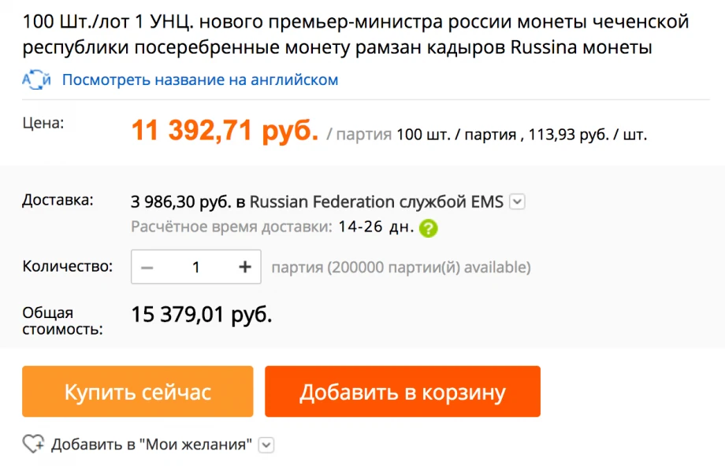

Торговцы Aliexpress избрали Кадырова премьером России
Китайская торговая онлайн-площадка активно зарабатывает на образах российских политиков
Торговый гигант Aliexpress стал чрезвычайно популярен у россиян в последние годы. Не удивительно, что это привело к появлению на ресурсе так называемых "российских" товаров. Китайцы активно эксплуатируют исторические, архитектурные, религиозные и иные символы, имеющие непосредственное отношение к России и ее культуре, причем такой маркетинговый ход прекрасно способствует продвижению азиатской продукции. Одним из последних веяний стало использование образов политиков нашей страны, причем как современных, так и исторических. Присутствие принтов с изображением различных политических деятелей на товарах, судя по всему, обусловлено их популярностью у наших граждан.
Первое, что нас заинтересовало на известном торговом ресурсе - это продукция, которая содержит изображения Рамзана Кадырова. Сразу два магазина - TOP Arts World и Guangzhou Zhantong Network Co LTD - предлагают посеребренные сувенирные монеты с образом главы Чеченской республики и надписью "Мы живем в великой стране" на аверсе, и мечети "Сердце Чечни" - на реверсе.
Первый магазин предлагает купить партию из 100 монет за 11 392 рубля.
Еще около 4 тысяч рублей будет стоить доставка в Россию. Второй магазин выставил на продажу партию из 10 аналогичных монет за 1 524 рубля. За полтора месяца их могут доставить бесплатно посредством почтового сервиса China Post. Желание получить монеты за две недели сразу же пропадает из-за стоимости экспресс-доставки - 22 тысячи рублей.

Скрин ru.aliexpress.com
Но самое интересное во всей этой истории китайской торговли монетами с Кадыровым то, что в описании товара азиатские магазины называют главу Чечни "новым премьер-министром России". С чего китайцы решили, что Кадыров – премьер-министр, неизвестно, но азиаты, как водится, народ дальновидный.
Кадыров далеко не единственный российский политик, на имени и образе которого стараются заработать наши китайские друзья. Самый популярным российским политиком был и остается Владимир Путин.
Образ президента России используется для продажи монет, футболок, толстовок, чехлов для телефонов и прочей продукции, на которую можно нанести принт. Пока еще премьер России, Дмитрий Медведев, тоже удостоился чести созерцать мир с китайских товаров. Делать он это может с монет, или с портрета маслом, который продается на торговой площадке за 4500 рублей.
Но самое интересное, во всей этой истории китайской торговли монетами с Кадыровым то, что в наименовании товара азиатские магазины называют главу Чечни "новым премьер-министром России". С чего китайцы решили что глава Чечни станет премьером всей России неизвестно, но они, как известно, народ дальновидный.
Кадыров далеко не единственный российский политик, на имени и образе которого стараются заработать наши китайские друзья. Самый популярным российским политиком был и остается Владимир Путин.
За 15 тысяч рублей можно себе заказать бюст Сталина с доставкой на дом
Спикера Государственной думы Вячеслава Володина, которого некоторые уже назвали преемником Путина, еще плохо знают в Китае, и товаров с ним найти на Aliexpress невозможно.
Зато с легкостью можно приобрести актуальный ныне косплей - платье, в котором, по мнению продавца, любой желающий может преобразиться в депутата и экс-прокурора Наталью Поклонскую.
Из советского периода у китайских торговцев «безделушками» наиболее популярны образы Ленина и Сталина. Если кому-то очень захочется, то за 15 тысяч рублей можно заказать себе бронзовый бюст знаменитого диктатора или вождя пролетариата, которые привезут вам домой абсолютно бесплатно.